Dynamic Analysis and Modelling of Curling Stone Motion
A close look at what happens when curling stones collide. Video motion-tracking software (Tracker) and Python models pull apart the momentum and collision mechanics frame by frame, then use them to measure two real material properties: the coefficient of restitution between stones, and average friction on the ice.
Olympic Curling Clip Analysis
The data comes from one clip: the 2018 PyeongChang Olympics gold medal match, where one stone sets off a chain of collisions with the others. That footage is the entire experimental dataset.
Project Foundations: Information & Assumptions
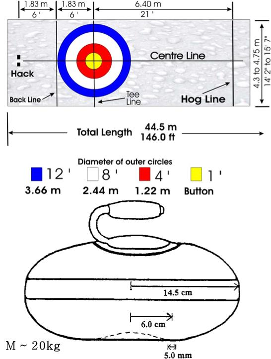
Curling Info & Problem Statement
Curlers read stone collisions to plan their next shot, whether they'd call it physics or not. This study models those collisions directly, to see how they set trajectories and final placement, and to pull real numbers for the coefficient of restitution and rink friction out of the footage.
Assumptions and Simplifications
- Geometry: Stones are simplified to 2D circular projections, justified by the widest collision band.
- Friction: Assumed constant and small, negligible for short interactions due to no sweeping in the video.
- Air Drag: Disregarded due to relatively slow velocities and short distances.
- Center of Mass (COM): Assumed to coincide with the center of the granite disc.
- Coefficient of Restitution (e): Treated as a constant across all stones and all interactions.
Tracker: Data Acquisition & Analysis
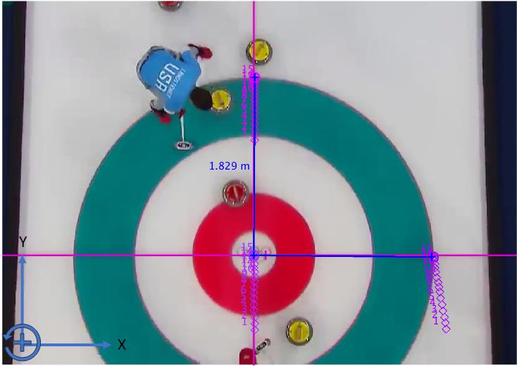
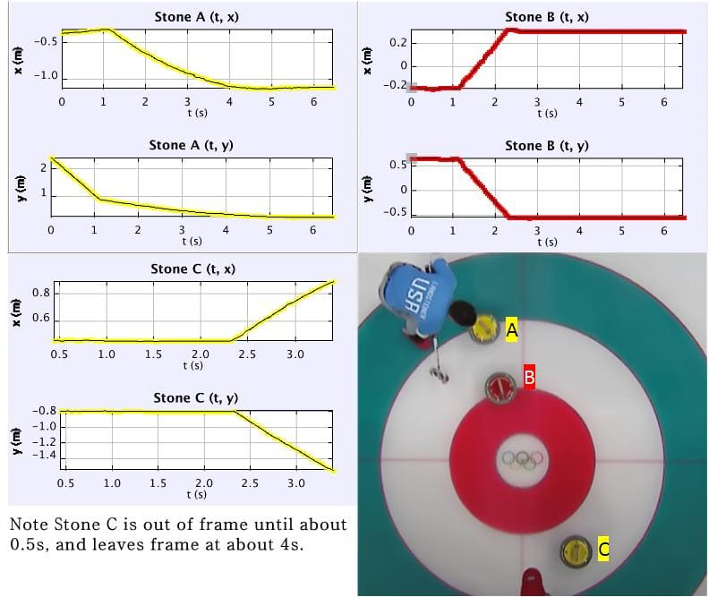
The video clip was imported into Tracker. To account for the moving and zooming camera, the center, top-edge, and right-edge of the largest field circle were tracked. The origin was affixed to the center, with calibration sticks of 1.829m length. This created an axis system fixed on real-world elements, evolving with the camera for accuracy.
The position of each stone (A, B, C) was tracked using its center of mass. Data for time, x, and y displacement was exported for Python analysis. For angular motion, new axes were set at the CoM of each stone, and a point on the edge of each stone was tracked to obtain angle vs. time data.
Linear and angular velocities were calculated by splitting data into pre- and post-collision periods, approximating Riemann Sums for instantaneous velocities, and taking the mean.
Coefficient of Restitution & Friction
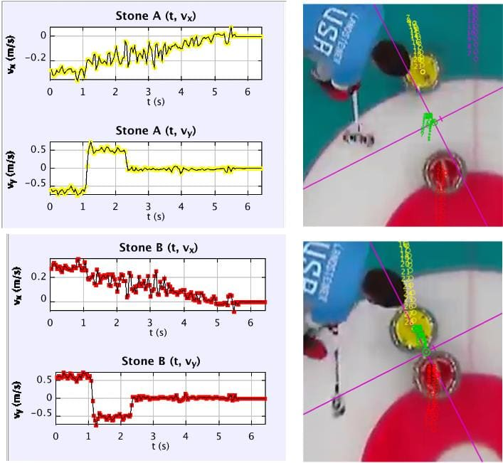
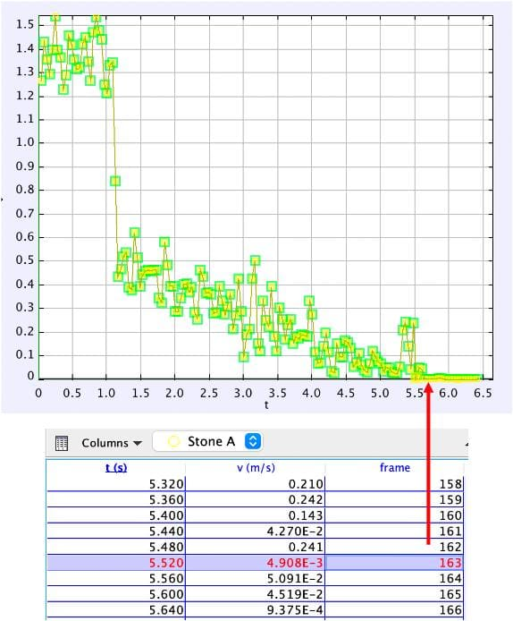
Collision 1 (A hitting B) was isolated to estimate the coefficient of restitution. A new axis was created at the combined center of mass, with its normal axis intersecting the centroids of the stones at collision. Velocities were split into normal and tangential components for calculation. The average coefficient of kinetic friction was estimated by isolating Stone A's motion post-collision until rest. Using its instantaneous velocity after collision and the time it came to rest, the required acceleration and thus average frictional force were calculated.
Tracker-Generated Motion Plots:
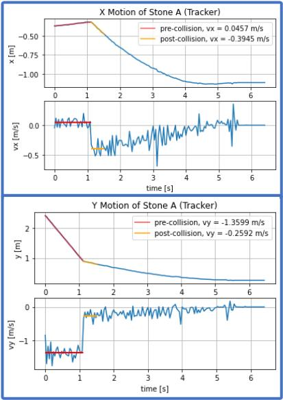
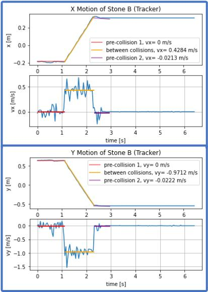
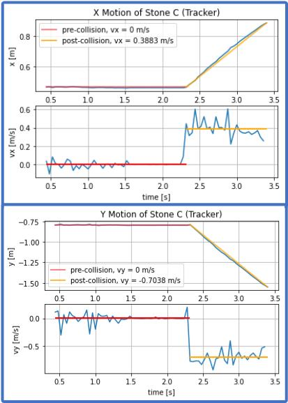
Tracker-Generated Angular Motion Plots:
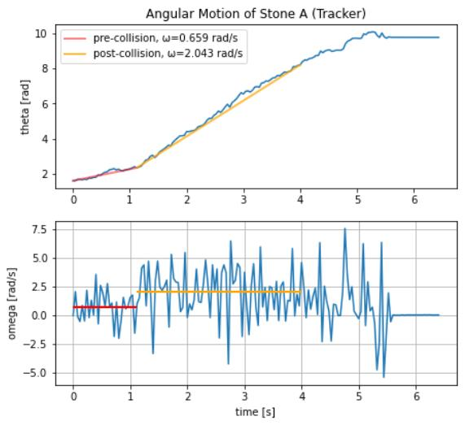
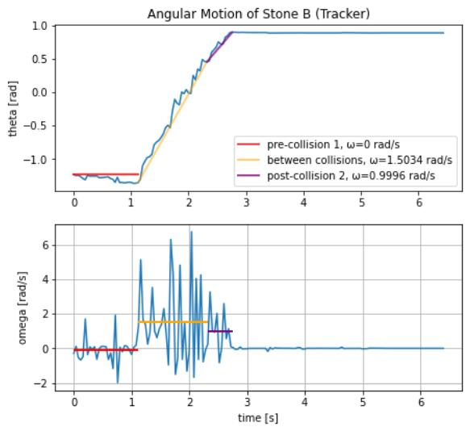
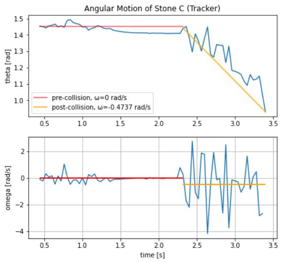
Tracker-Generated Values:
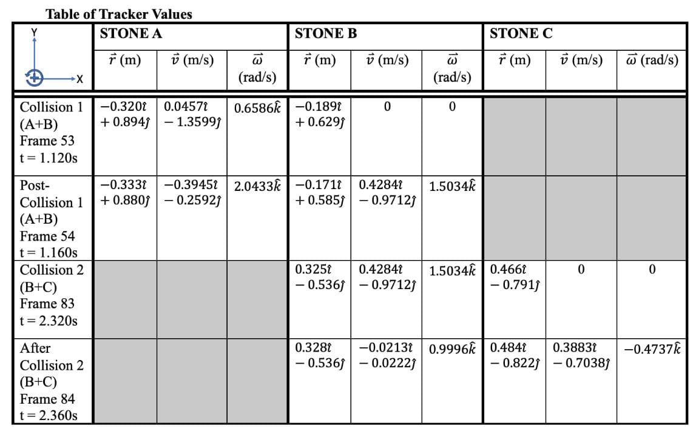
Python Modeling: Simulation & Analysis
Mode of Analysis & Equations of Motion
The overarching analysis lens is that of an oblique central impact, occurring at both collisions. The impulse-momentum diagram (Figure 1) illustrates Collision 1 (A-B). Since the momenta of the system are analyzed as a whole, internal impulsive forces during collision are neglected. Equations of motion derive from this diagram: tangential velocity is conserved, and normal momentum is conserved (given equal stone masses).
The coefficient of restitution is applied along the normal axis. Due to the rigid body nature of the stones (rotating while translating), tracked center of mass velocities were converted to velocities at the point of contact. However, determining post-collision angular velocities without external information proved challenging, leading to an under-determined system.
To properly constrain the system, post-collision angular velocities of Stone A after Collision 1 and Stone C after Collision 2 were introduced as additional knowns from Tracker data.
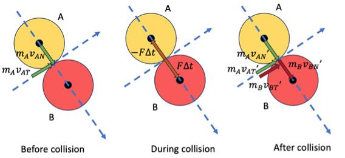
Rigid-Body Analysis
The rigid-body analysis model incorporated initial positions, initial linear and angular velocity of stone A, and the post-collision angular velocities of stone A and C as initial conditions. Normal and tangential components of velocity are calculated by defining a unit normal vector that intersects the centers of mass of the colliding stones. This vector is used in a dot product to determine the magnitude of the normal velocity component. The tangential component is then derived.
The system of four equations and four unknowns (from oblique central impact principles) is then solved. Importantly, the calculated velocities are at the point of collision and must be converted to velocities at the center of mass by considering angular velocity. The final angular velocities are derived using the conservation of angular momentum. Velocities are then converted back to the x-y coordinate system for subsequent collision calculations.
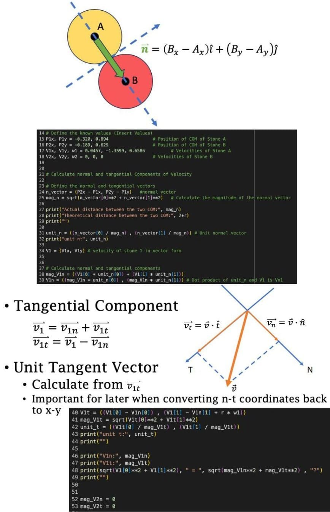
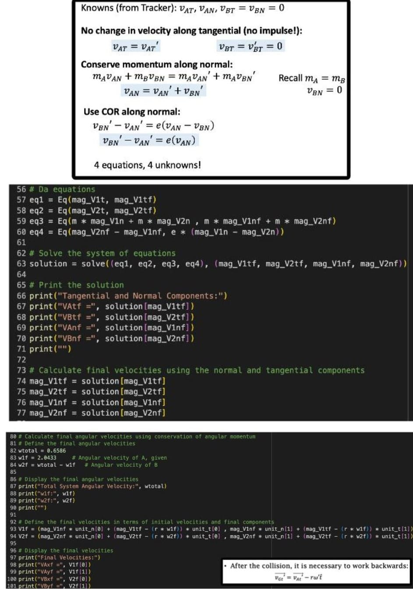
Python Modeling: B travelling to C (Rigid Body)
After the first collision, Stone B's final velocity (from the rigid-body analysis) sets its trajectory: $x = -0.189 + t$ and $y = 0.629 - 3.46284t$. That path runs slightly off from the real Tracker data, but it's close enough to show Stone B heading into a second collision. The same code runs again for the B-C interaction, just with updated initial conditions.
Python Modeling: B travelling to C, No Angular Momentum (Point-Mass)
Tracker data revealed that the angular velocities of the curling stones did not consistently obey the conservation of angular momentum, suggesting an unaccounted torque (possibly from uneven ice friction). To address this, an alternative Python model was developed where angular velocity was neglected, treating stones as point masses. In this simplified model, final angular velocities are not calculated or considered in the final velocity calculations.
The path of Stone B after the first collision is again calculated using a parametrized equation derived from its final velocity and position vectors. When comparing this model to the rigid-body analysis, neglecting angular motion yields a more accurate real-world trajectory, further emphasizing the unforeseen torque's impact over the simplification's inherent error.
Python Calculated Values:
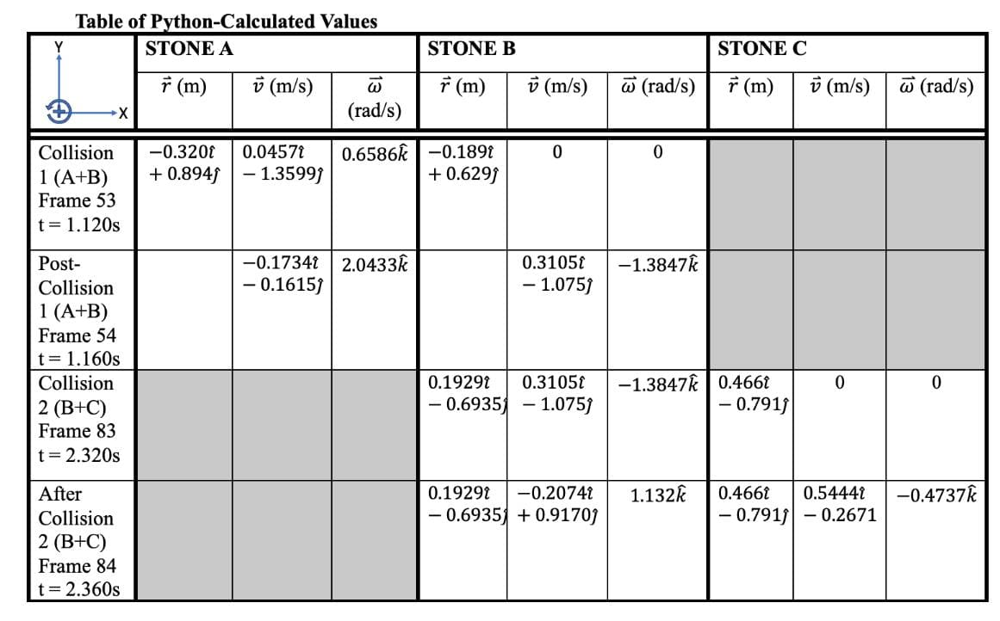
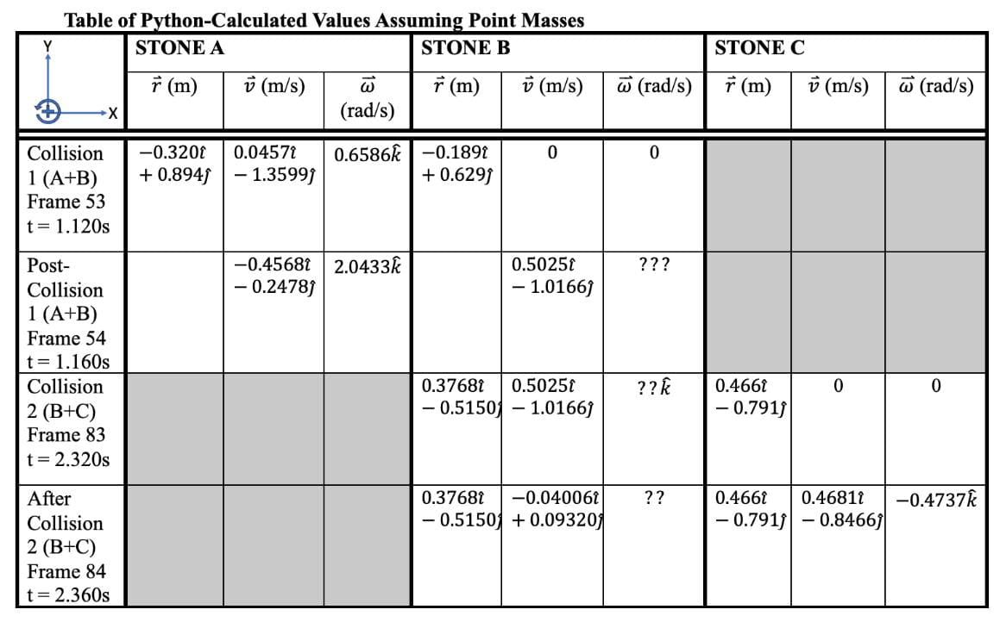
Results and Discussion
Figure 4 (below) provides a comparison between the projected trajectories of Stone B, calculated using Python, and its true path from Tracker data. Stone B was selected for this comparison because it was simulated from start to finish for both Collision 1 and 2.
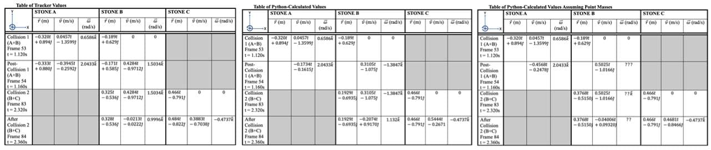
The point-mass simplification actually tracked closer to the true path in both x and y motion than the rigid-body model did, despite ignoring rotation entirely. The theoretically more "correct" rigid-body analysis deviated further — it even flipped velocity direction after Collision 2. That's a sign that unaccounted-for torque hurt the simulation more than skipping rotation did.
Experimental vs. Actual Values:
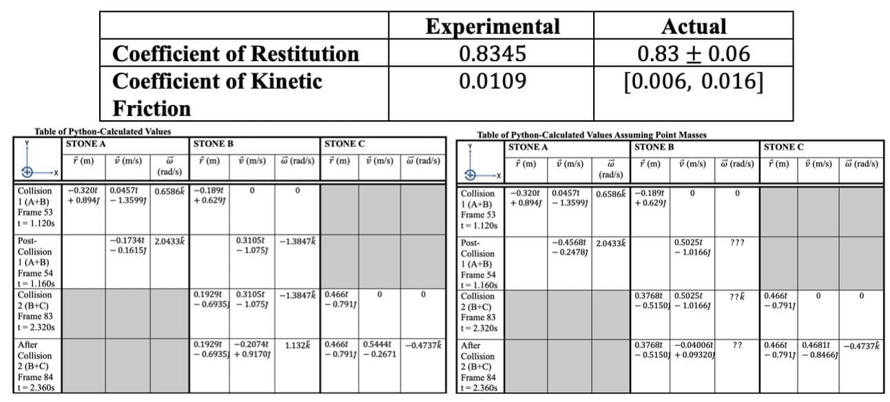
The experimentally calculated values for the coefficient of restitution and kinetic friction align well with accepted scientific literature values. This agreement, derived from principles of linear motion, further supports the conclusion that the bulk of trajectory errors are attributable to unforeseen conditions primarily affecting angular momenta.
The biggest error source is probably the constant-friction assumption — uneven friction across the rink likely added angular momentum after each collision. Low frame rate and a moving camera didn't help Tracker's accuracy either. A high-frame-rate camera locked perpendicular to the rink, over a controlled ice surface, would tighten this up considerably.